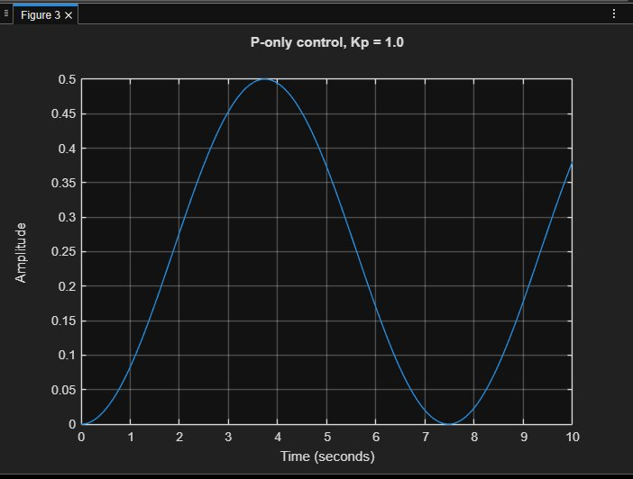
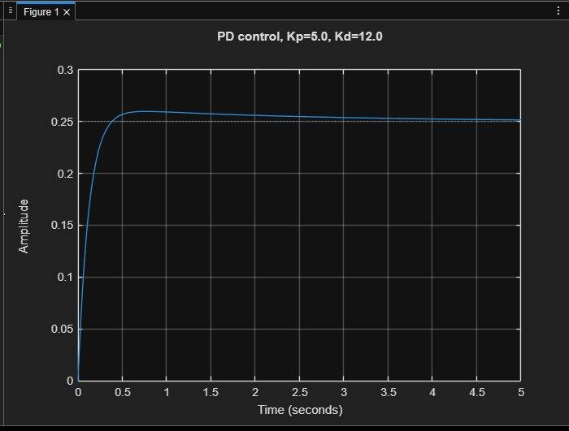
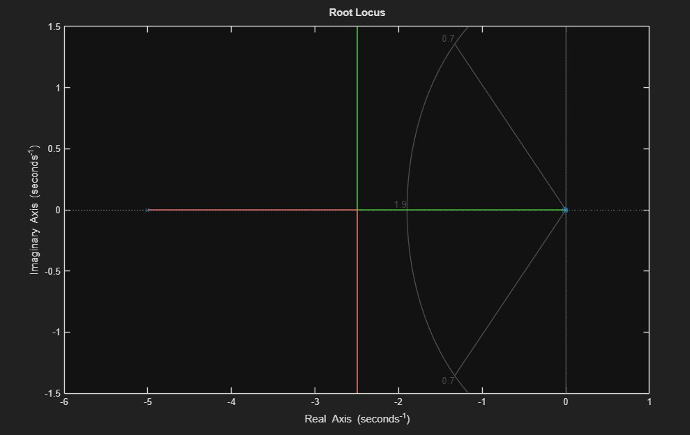
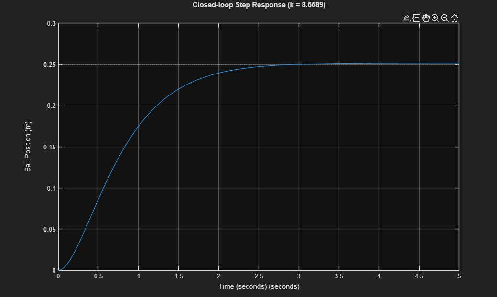
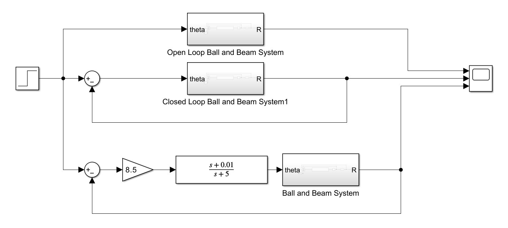
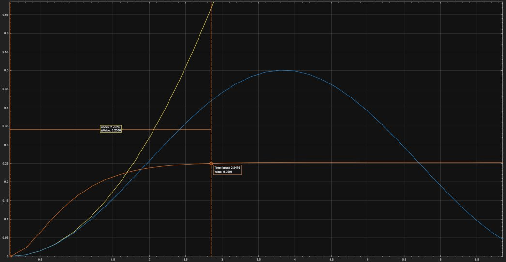

Ball and Beam Control System
Keeping a rolling ball at an exact spot on a tilting beam. The system is unstable on its own, so it needs a feedback controller to work at all.
The problem
A motor tilts the beam through a lever arm, and gravity rolls the ball along it. If the angle is not corrected constantly, the ball rolls off. We modeled the system from the physics of a real lab setup and found it behaves as a double integrator, P(s) ≈ 0.72 / s², which is marginally stable.
Target for a 0.25 m step in ball position: settling time under 3 s and overshoot under 5%.
Why simple control fails
Proportional control alone only makes the ball swing back and forth forever. It never settles.


Two designs that work
- PD controller. Adding derivative action damps the motion. With Kp = 5 and Kd = 12 the response settles in about 2.42 s with 3.9% overshoot. No integral term was needed, since the plant already has zero steady-state error for a step.
- Lead compensator (root locus). A lead compensator with a zero at −0.01 and a pole at −5 bends the root locus into the target region. A gain of about 8.5 gives a settling time of about 2.4 s with almost no overshoot.


Simulink check
We built the system in Simulink and compared three cases on the same input: open loop (the ball runs away), closed loop without a controller (it oscillates), and closed loop with the lead compensator (it settles at 0.25 m in under 3 s).


Results
| Controller | Settling time (target < 3 s) | Overshoot (target < 5%) | Status |
|---|---|---|---|
| P only | Never settles | Oscillates | Fail |
| PD (Kp = 5, Kd = 12) | 2.42 s | 3.9% | Pass |
| Lead compensator (k ≈ 8.5) | 2.4 s | ≈ 0% | Pass |